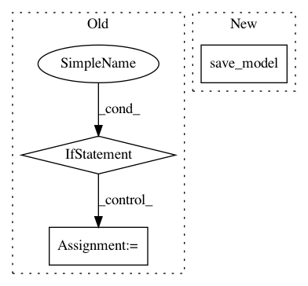

838f3aa207070d7f8f02f529a5f45076e0caab66,autosklearn/cli/base_interface.py,,make_mode_holdout,#Any#Any#Any#Any#,82
Before Change
signal.signal(15, empty_signal_handler)
evaluator.finish_up()
model_directory = os.path.join(os.getcwd(), "models_%d" % seed)
if os.path.exists(model_directory):
model_filename = os.path.join(model_directory,
"%s.model" % num_run)
with open(model_filename, "w") as fh:
pickle.dump(evaluator.model, fh, -1)
def make_mode_test(data, seed, configuration, metric):
evaluator = TestEvaluator(data,
configuration,
all_scoring_functions=True,
After Change
backend = Backend(None, os.getcwd())
if os.path.exists(backend.get_model_dir()):
backend.save_model(evaluator.model, num_run)
def make_mode_test(data, seed, configuration, metric):
evaluator = TestEvaluator(data,
In pattern: SUPERPATTERN
Frequency: 4
Non-data size: 3
Instances
Project Name: automl/auto-sklearn
Commit Name: 838f3aa207070d7f8f02f529a5f45076e0caab66
Time: 2015-10-01
Author: feurerm@informatik.uni-freiburg.de
File Name: autosklearn/cli/base_interface.py
Class Name:
Method Name: make_mode_holdout
Project Name: dnouri/skorch
Commit Name: e38d5d92c6ec69efbe03034fe659c88d2815e7cc
Time: 2018-07-26
Author: alexandrov88@gmail.com
File Name: skorch/callbacks/training.py
Class Name: Checkpoint
Method Name: on_epoch_end
Project Name: pyannote/pyannote-audio
Commit Name: e81f54bb33f4a41c2ebdfdda41e5d70b52c32c87
Time: 2017-05-05
Author: bredin@limsi.fr
File Name: pyannote/audio/callback.py
Class Name: LoggingCallback
Method Name: on_epoch_end
Project Name: lcswillems/torch-rl
Commit Name: 907a86e9c4af4ad476c9d4a7201f87f01b835f0d
Time: 2018-04-14
Author: lcswillems@gmail.com
File Name: train.py
Class Name:
Method Name: